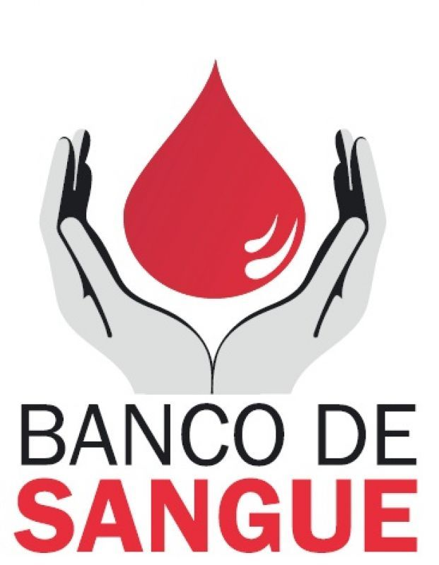

Doar sangue é um processo fácil, rápido, seguro e solidário. A doação de sangue ocorre quando uma pessoa voluntariamente vai a um centro especializado e disponibiliza seu sangue para ser usado em transfusões ou outras situações clínicas.
No Brasil são coletadas 3,7 milhões de bolsas por ano, o que corresponde ao índice de 1,8%. Na Europa e Estados Unidos, esse percentual é de 5% a 7%. Contudo, o Ministério da Saúde tem investido em diversas ações para aumentar as taxas de doação.
No dia 14 de junho é celebrado o "Dia Mundial do Doador de Sangue" e juntamente com a data diversos hospitais e órgãos de saúde lançam a campanha Junho Vermelho, para incentivar a doação.
A falta do estoque de sangue em um hospital pode levar ao cancelamento de cirurgias e de procedimentos. Um exemplo é o paciente que faz quimioterapia, já que, caso não receba o suporte de transfusão, poderá não resistir ao tratamento. "Além disso, pode ser um enorme prejuízo ao paciente o adiamento de cirurgias cardíacas, de transplantes de rim, de fígado, de medula óssea, entre outros procedimentos que necessitam de sangue e de plaquetas".
No site abaixo, terá os endereços dos centro de doação de sangue e contato.
| Tipo sanguíneo | Doa para | Recebe de |
|---|---|---|
| O+ | Todos os tipos de fator Rh+ | O+ e O- | O- | Todos os tipos | O- | A+ | A+ e AB+ | O+, O-, A+, A- | A- | A+, A-, AB+, AB- | A- e O- | B+ | B+ e AB+ | O+, O-, B+, B- | B- | B+, B-, AB+ e AB- | O- e B- | AB+ | AB+ | Todos Rh+ e Rh- | AB- | AB+ e AB- | Todos os tipos Rh- |